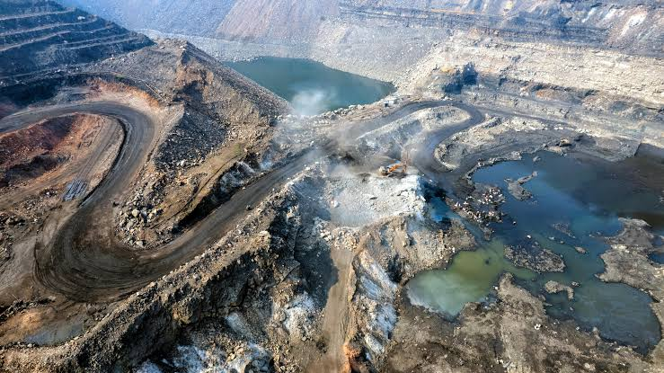
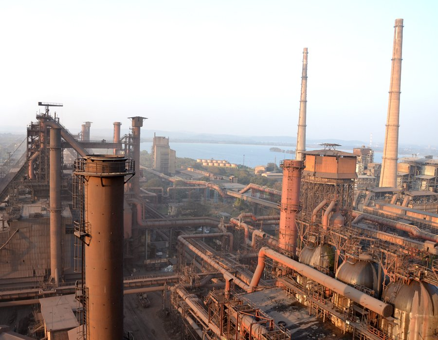
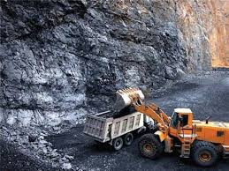
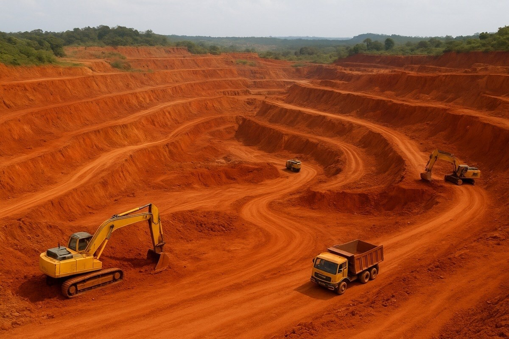

Famous Mining Tourist Spots

Dhanbad Coal Mines
Known as the Coal Capital of India, Dhanbad offers insight into large-scale coal mining.

Jharia Coalfields
Famous for underground coal fires and geological significance.

Bokaro Steel City
Industrial tourism showcasing steel production and mining heritage.

Hazaribagh Mines
Scenic mining landscapes combined with ecological tourism.

Ranchi Mining Region
Historic mining sites surrounded by waterfalls and forests.